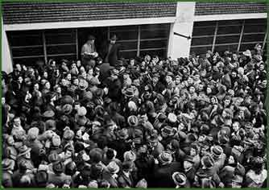

|  | |||
| The Üvegház (Glass House) in Vadász street (Pest). Located here was the Representation of Foreign Interests Emigration Department of the Swiss Embassy, together with the Palestine Emigration Office of the Swiss Consulate. Under their protection, the Zionist movements managed to give shelter to about 3,000 people in the building. The crowd is waiting for certificates in Vadász Street. | |||